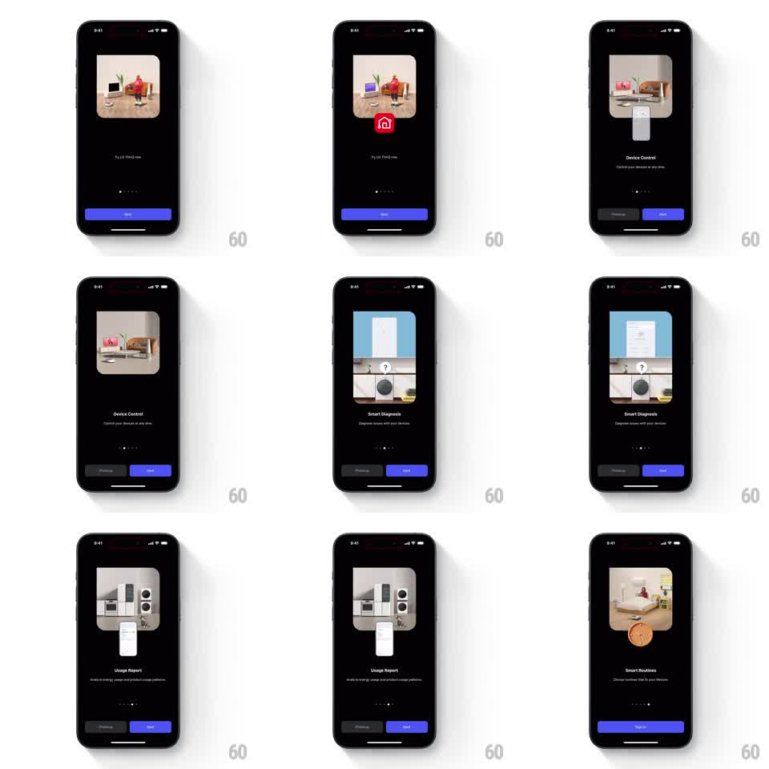

Media
Frame-by-frame

Rebuild this animation 1:1: LG ThinQ's 3D onboarding carousel - each page shows a 3D smart-home scene whose props float and settle (a robot vacuum roaming, a home icon popping, a phone sliding in front of appliances), paired with feature copy and page dots.

Rebuild this animation 1:1: LG ThinQ's 3D onboarding carousel - each page shows a 3D smart-home scene whose props float and settle (a robot vacuum roaming, a home icon popping, a phone sliding in front of appliances), paired with feature copy and page dots. ## Integration Integration: stack-agnostic spec - springs given as stiffness/damping, timed motions as duration + curve; map every value to your framework and animation library of choice. ## Scene Dark onboarding carousel, five pages: intro (robot vacuum in a living room, red home badge popping over it), "Device Control" (phone rising in front of a TV/fridge scene), "Smart Diagnosis" (washing machine with a floating document and question marks), "Usage Report" (phone with a chart over kitchen appliances), "Smart Routines" (bedroom with an orange clock badge). Blue Next / grey Previous buttons and page dots. ## Motion spec Pattern: paged 3D scenes with floating prop choreography. - Page change (Next or swipe): the current scene slides left and fades (300ms) while the new scene enters from the right with a slight scale (0.95 -> 1, 300ms, ease-out); headline and subcopy crossfade with a 10pt rise (250ms, 80ms after the scene starts). - Within each scene, props idle: the vacuum drifts on a small looping path (translate +-15pt over 3s), badges bob (translateY +-5pt, 2s, ease-in-out), and the phone slides up into frame once on entry (spring ~260/20). - Badge pops use one overshoot (scale 0.6 -> 1.1 -> 1, spring ~340/15) when the page lands. - Page dot indicator slides its active pill to the new index (spring ~300/22); Previous appears from page 2 onward (fade, 200ms). - Final page swaps Next for a full-width Start button (crossfade, 200ms). ## Calibration - Scenes are rendered 3D illustrations with soft shadows; treat each as a layered composition (background room, device, floating props) so props can move independently. - Keep 3D idle motion slow and small - the page transition is the primary motion. ## Reduced motion Scenes crossfade (300ms); props static. ## Don't miss - The red LG-style home badge and the phone-in-front-of-devices motif carry the brand story; keep colors exact. - Copy stays bottom-anchored and stable across pages.